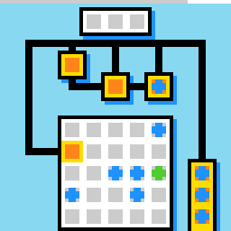

lf52
Peg solitaire: click pegs to jump and capture, and win a level when only one peg is left.
10 levels · 11 rules · all levels replayed in Lean
Replay
The certified run that cleared every level, one action at a time.

Press Play or step to load the run. Keys, while the player is on screen: ← → step, Space play / pause. A click is circled; cells that changed are outlined.
How it plays
This is a game of peg solitaire. The light grey cells are holes and the green round pieces are pegs. Click a peg to select it; grey rings appear on the cells it can jump to. Click one of the rings and the peg jumps over the adjacent cell and lands there; if the cell it jumps over holds a peg, that peg is captured. The level is won when only one peg is left, counting pegs outside the view. The board is split into several pieces joined by black rails; the arrow keys move the orange cart on a rail one step along it, the peg in the cart moves with it, and the camera scrolls with the loaded cart. Red and blue pegs can also be selected and can jump, but they do not capture what they jump over; purple stones sit on holes, and a peg can jump over them. When a jump leaves a dead position, a large disc appears in the lower-left corner; the undo key takes back the last move.

Model
The final model: 12 object types and 11 rules. Each rule is a Python check against every recorded step; 10 of them are translated into Lean (the paper's per-game table). Code under a rule is the file of the same name in the agent's Lean project.
Object types
- Grid phase
gridThe board grid's pixel offset on screen; camera scrolls are not always whole cells.Lean · Grid.lean
import Obj.Geometry.Cell namespace Game def VW : Nat := 11 def phase (wp cam : Int × Int) : Nat × Nat := (((wp.1 - cam.1) % 6).toNat, ((wp.2 - cam.2) % 6).toNat) def rowVisible (pr i : Nat) : Bool := 1 ≤ pr + 6 * i && pr + 6 * i + 3 ≤ 63 def colsVisible (pc : Nat) : Nat := (60 - pc) / 6 + 1 def visMask (pr pc : Nat) : Mask := (List.range VW).foldl (fun acc i => if rowVisible pr i then acc ||| (((1 <<< colsVisible pc) - 1) <<< (VW * i)) else acc) 0 end Game - Holes
holesLight grey board cells that can hold a peg.Lean · Hole.lean
-- Board.holes : Holes abbrev Holes := Mask - Rails
railsBlack lines that carts can only move along.Lean · Rail.lean
-- Board.rails : Rails abbrev Rails := Mask - Carts
cartsOrange movable holes that arrow keys move along rails, carrying their contents.Lean · Cart.lean
-- Core.carts : Carts abbrev Carts := Mask - Pegs
pegsGreen round pegs; capturing down to one in the whole level wins.Lean · Peg.lean
-- Core.pegs : Pegs abbrev Pegs := Mask - Red pegs
greysRed pegs that can be selected and jump like pegs, but never capture.Lean · Grey.lean
-- Core.greys : Greys abbrev Greys := Mask - Blue pegs
darksBlue pegs that jump the same way as red pegs.Lean · Dark.lean
-- Core.darks : Darks abbrev Darks := Mask - Stones
stonesPurple squares on holes or in carts that pegs can jump over.Lean · Stone.lean
-- Core.stones : Stones abbrev Stones := Mask - Rings
ringsGrey rings drawn on landing cells after selecting; clicking a ring makes the jump.Lean · Ring.lean
import Obj.Geometry.Cell namespace Game abbrev Rings := Mask end Game - Selection frame
selectedThe dark grey frame around the selected cell.Python only - Dead-position disc
deadThe large disc in the lower-left corner after a jump leaves a dead position.Lean · Dead.lean
import Obj.Geometry.Cell namespace Game abbrev Dead := Bool end Game - Counter bar
hudThe top row, counting the steps taken in this level.Lean · Hud.lean
-- St.hud : Hud abbrev Hud := Nat
Rules
click_selectsWith nothing selected, clicking a peg that can jump selects it and draws its rings.Python
from __future__ import annotations from derive.moves import SELECTABLE, clicked, jump_targets from objects import parse from rule._common import same_level … … def scope_(prev, action, nxt, ctx=None): if not action.startswith("ACTION6"): … if not same_level(ctx): … a = parse(prev) if a.selected is not None: … c = clicked(a, action) if c is None or not any(c in getattr(a, k) for k in SELECTABLE): … if not jump_targets(a, c): … return None def assert_(prev, action, nxt, ctx=None): if scope_(prev, action, nxt, ctx): return "NA" a, b = parse(prev), parse(nxt) c = clicked(a, action) ok = (b.grid == a.grid and b.selected == c and b.rings == jump_targets(a, c) and b.holes == a.holes and b.rails == a.rails and b.carts == a.carts and b.pieces() == a.pieces() and all(getattr(b, k) == getattr(a, k) for k in ("pegs", "greys", "darks", "stones"))) return "TRUE" if ok else "FALSE"Lean · ClickSelects.lean
import Obj.World import Obj.Marks.Ring namespace Game def jumpTo (b : Board) (c : Core) (p : Nat) (d : Dir) : Option Nat := match b.nbr p d with | none => none | some m => match b.nbr m d with | none => none | some t => if has c.pieces m && has (floorOf b c) t && !has c.pieces t then some t else none def targets (b : Board) (c : Core) (p : Nat) : Rings := [Dir.up, Dir.down, Dir.left, Dir.right].foldl (fun acc d => match jumpTo b c p d with | some t => acc ||| bit t | none => acc) 0 def selectable (c : Core) (p : Nat) : Bool := has c.pegs p || has c.greys p || has c.darks p def canSelect (b : Board) (c : Core) (p : Nat) : Bool := selectable c p && targets b c p != 0 def select (c : Core) (p : Nat) : Core := { c with sel := some p } def ringsOf (b : Board) (c : Core) : Rings := match c.sel with | some p => targets b c p | none => 0 end Gameclick_jumpsClicking a ring jumps the selected peg over the adjacent cell onto the ring.Python
from __future__ import annotations from derive.camera import camera_shift from derive.moves import clicked, middle_of from objects import parse from rule._common import pieces_by_kind, same_level, to_prev … def scope_(prev, action, nxt, ctx=None): if not action.startswith("ACTION6"): … if not same_level(ctx): … a = parse(prev) if a.selected is None: … c = clicked(a, action) if c not in a.rings: … return None def expected(a, c): kinds = pieces_by_kind(a) k = kinds[a.selected] m = middle_of(a.selected, c) out = dict(kinds) del out[a.selected] out[c] = k if k == "pegs" and kinds.get(m) == "pegs": del out[m] return out def assert_(prev, action, nxt, ctx=None): if scope_(prev, action, nxt, ctx): return "NA" a, b = parse(prev), parse(nxt) shift = camera_shift(a, b) if shift is None: return "NA" c = clicked(a, action) want = expected(a, c) va = a.visible() if b.selected is not None or b.rings: return "FALSE" got_kinds = pieces_by_kind(b) for cb in b.visible(): ca = to_prev(a, b, shift, cb) if ca is None or ca not in va: continue if want.get(ca) != got_kinds.get(cb): return "FALSE" if (ca in a.carts) != (cb in b.carts): return "FALSE" return "TRUE"Lean · ClickJumps.lean
import Obj.World import Rule.Move.ClickSelects namespace Game def middle (p t : Nat) : Nat := (p + t) / 2 def moveOne (p t : Nat) (x : Mask) : Mask := if has x p then diff x (bit p) ||| bit t else x def jump (c : Core) (t : Nat) : Core := match c.sel with | none => c | some p => { c with pegs := if has c.pegs p && has c.pegs (middle p t) then diff (moveOne p t c.pegs) (bit (middle p t)) else moveOne p t c.pegs greys := moveOne p t c.greys darks := moveOne p t c.darks stones := moveOne p t c.stones sel := none } def isJump (b : Board) (c : Core) (q : Nat) : Bool := match c.sel with | some p => has (targets b c p) q | none => false end Gameclick_inertWith nothing selected, clicking where no jump is possible changes nothing.Python
from __future__ import annotations from derive.moves import SELECTABLE, clicked, jump_targets from objects import parse from rule._common import same_level … def scope_(prev, action, nxt, ctx=None): if not action.startswith("ACTION6"): … if not same_level(ctx): … a = parse(prev) if a.selected is not None: … c = clicked(a, action) if c is not None and any(c in getattr(a, k) for k in SELECTABLE) and jump_targets(a, c): … return None def assert_(prev, action, nxt, ctx=None): if scope_(prev, action, nxt, ctx): return "NA" a, b = parse(prev), parse(nxt) ok = (b.grid == a.grid and b.holes == a.holes and b.rails == a.rails and b.carts == a.carts and all(getattr(b, k) == getattr(a, k) for k in ("pegs", "greys", "darks", "stones")) and b.selected == a.selected and b.rings == a.rings) return "TRUE" if ok else "FALSE"Lean · ClickInert.lean
import Obj.World namespace Game def inert (c : Core) : Core := c end Gamekeys_push_cartsArrow keys move each cart with rail ahead one step along it, carrying its contents.Python
from __future__ import annotations from derive.camera import camera_shift from derive.carts import MOVE, STAY, UNKNOWN, push from objects import parse from rule._common import pieces_by_kind, same_level, to_prev DIRS = {"ACTION1": (-1, 0), "ACTION2": (1, 0), "ACTION3": (0, -1), "ACTION4": (0, 1)} … def scope_(prev, action, nxt, ctx=None): if action not in DIRS: … if not same_level(ctx): … return None def assert_(prev, action, nxt, ctx=None): if scope_(prev, action, nxt, ctx): return "NA" a, b = parse(prev), parse(nxt) shift = camera_shift(a, b) if shift is None: return "NA" d = DIRS[action] fate = push(a, d) va = a.visible() unknown = set() for c, f in fate.items(): if f == UNKNOWN: unknown |= {c, c.shift(*d)} want_carts = {c.shift(*d) if f == MOVE else c for c, f in fate.items() if f != UNKNOWN} kinds = pieces_by_kind(a) want_pieces = {} for c, k in kinds.items(): if c in a.carts: f = fate.get(c) if f == UNKNOWN: continue want_pieces[c.shift(*d) if f == MOVE else c] = k else: want_pieces[c] = k got_kinds = pieces_by_kind(b) for cb in b.visible(): ca = to_prev(a, b, shift, cb) if ca is None or ca not in va or ca in unknown: continue entering = ca.shift(-d[0], -d[1]) not in va is_cart = cb in b.carts if is_cart != (ca in want_carts) and not (is_cart and entering): return "FALSE" if not (is_cart and entering and ca not in want_carts): if got_kinds.get(cb) != want_pieces.get(ca): return "FALSE" moved = any(f == MOVE for f in fate.values()) anyunk = any(f == UNKNOWN for f in fate.values()) if moved: if b.selected is not None or b.rings: return "FALSE" elif not anyunk: if (a.selected is None) != (b.selected is None): return "FALSE" if a.selected is not None and to_prev(a, b, shift, b.selected) != a.selected: return "FALSE" return "TRUE"Lean · KeysPushCarts.lean
import Obj.World namespace Game def prune (w : Nat) (carts : Mask) (d : Dir) : Nat → Mask → Mask | 0, cand => cand | f + 1, cand => let blocked := cand &&& shiftD w (diff carts cand) d.opp if blocked == 0 then cand else prune w carts d f (diff cand blocked) def movers (b : Board) (c : Core) (d : Dir) : Mask := prune b.w c.carts d 32 (c.carts &&& shiftD b.w b.rails d.opp) def ride (w : Nat) (mv : Mask) (d : Dir) (x : Mask) : Mask := diff x (x &&& mv) ||| shiftD w (x &&& mv) d def pushCarts (b : Board) (c : Core) (d : Dir) : Core := let mv := movers b c d { c with carts := ride b.w mv d c.carts pegs := ride b.w mv d c.pegs greys := ride b.w mv d c.greys darks := ride b.w mv d c.darks stones := ride b.w mv d c.stones sel := if mv == 0 then c.sel else none } end Gameundo_restoresThe undo key returns the board to before the last move.Python
from __future__ import annotations from objects import parse from rule._common import same_level … … def scope_(prev, action, nxt, ctx=None): if action != "ACTION7": … if not same_level(ctx): … if not ctx or ctx.get("hist") is None: … return None def assert_(prev, action, nxt, ctx=None): if scope_(prev, action, nxt, ctx): return "NA" h, b = parse(ctx["hist"]), parse(nxt) keep = ("grid", "holes", "rails", "carts", "pegs", "greys", "darks", "stones", "rings", "selected", "dead") return "TRUE" if all(getattr(h, k) == getattr(b, k) for k in keep) else "FALSE"Lean · UndoRestores.lean
import Obj.World namespace Game def undoCore (s : St) : Option Core := s.hist end Gamecamera_follows_peg_cartThe camera moves only with a cart that carries a peg.Python
from __future__ import annotations from derive.camera import camera_shift from derive.carts import MOVE, UNKNOWN, push from objects import parse from rule._common import same_level DIRS = {"ACTION1": (-1, 0), "ACTION2": (1, 0), "ACTION3": (0, -1), "ACTION4": (0, 1)} PAN = {0: (0, 0), 1: (0, 0), 2: (0, 8), 3: (6, 6), 4: (0, 6), 5: (0, 6), 6: (0, 0), 7: (6, 0), 8: (0, 6), 9: (0, 0)} … … def scope_(prev, action, nxt, ctx=None): if action not in DIRS: … if not same_level(ctx): … if camera_shift(parse(prev), parse(nxt)) is None: … return None def assert_(prev, action, nxt, ctx=None): if scope_(prev, action, nxt, ctx): return "NA" a, b = parse(prev), parse(nxt) shift = camera_shift(a, b) d = DIRS[action] fate = push(a, d) peg_cart_moved = any(f == MOVE and c in a.pegs for c, f in fate.items()) unknown = any(f == UNKNOWN for f in fate.values()) step = PAN.get(ctx.get("level_prev"), (0, 0)) pan = (d[0] * step[0], d[1] * step[1]) if peg_cart_moved: return "TRUE" if shift in ((0, 0), pan) else "FALSE" if unknown: return "TRUE" if shift in ((0, 0), pan) else "FALSE" return "TRUE" if shift == (0, 0) else "FALSE"Lean · CameraFollowsPegCart.lean
import Obj.World namespace Game def clampTo (lo hi : Option Int) (x : Int) : Int := let x := match hi with | some h => min h x | none => x match lo with | some l => max l x | none => x def follow (b : Board) (cam : Int × Int) (d : Dir) (pegMoved : Bool) : Int × Int := if pegMoved then match d with | .up => (clampTo b.loR b.hiR (cam.1 - b.pan.1), cam.2) | .down => (clampTo b.loR b.hiR (cam.1 + b.pan.1), cam.2) | .left => (cam.1, clampTo b.loC b.hiC (cam.2 - b.pan.2)) | .right => (cam.1, clampTo b.loC b.hiC (cam.2 + b.pan.2)) else cam end Gamehud_counts_stepsThe counter bar adds one cell for every step in this level, including undo.Python
from __future__ import annotations from objects import parse … def scope_(prev, action, nxt, ctx=None): if not ctx: … return None def assert_(prev, action, nxt, ctx=None): if scope_(prev, action, nxt, ctx): return "NA" a, b = parse(prev), parse(nxt) if ctx.get("level_next") != ctx.get("level_prev") and ctx.get("state_next") != "WIN": return "TRUE" if b.hud == 0 else "FALSE" return "TRUE" if b.hud == a.hud + 1 else "FALSE"Lean · HudCountsSteps.lean
import Obj.World namespace Game def tick (h : Hud) : Hud := h + 1 end Gamelevelup_on_last_captureThe level is won when only one peg is left in the whole level.Python
from __future__ import annotations from derive.moves import clicked, middle_of from objects import parse … … … def _capture(a, action): if not action.startswith("ACTION6") or a.selected is None: return False c = clicked(a, action) if c not in a.rings: return False return a.selected in a.pegs and middle_of(a.selected, c) in a.pegs def scope_(prev, action, nxt, ctx=None): if not ctx: … up = ctx.get("level_next") == (ctx.get("level_prev") or 0) + 1 if up: return None a = parse(prev) if _capture(a, action) and len(a.pegs) >= 3: return None … def assert_(prev, action, nxt, ctx=None): if scope_(prev, action, nxt, ctx): return "NA" a = parse(prev) up = ctx.get("level_next") == ctx.get("level_prev") + 1 if up: return "TRUE" if _capture(a, action) and len(a.pegs) == 2 else "FALSE" return "TRUE"Lean · LevelupOnLastCapture.lean
import Obj.World namespace Game def isGoal (c : Core) : Bool := popc 64 c.pegs == 1 end Gamecamera_jumps_only_on_jumpClicks that do not jump never move the camera.Python
from __future__ import annotations from derive.camera import camera_shift from derive.moves import clicked from objects import parse from rule._common import same_level … … def scope_(prev, action, nxt, ctx=None): if not action.startswith("ACTION6"): … if not same_level(ctx): … a = parse(prev) if a.selected is not None and clicked(a, action) in a.rings: … if camera_shift(a, parse(nxt)) is None: … return None def assert_(prev, action, nxt, ctx=None): if scope_(prev, action, nxt, ctx): return "NA" return "TRUE" if camera_shift(parse(prev), parse(nxt)) == (0, 0) else "FALSE"Lean · CameraJumpsOnlyOnJump.lean
import Obj.World import Step namespace Game theorem camera_still_unless_jump (b : Board) (s s' : St) (x y : Nat) (h : step b s (.click x y) = .ok s') (hj : ∀ q, cellAt b s.core.cam x y = some q → isJump b s.core q = false) : s'.core.cam = s.core.cam := by simp only [step, clickStep] at h split at h · split at h · simp at h · simp only [Res.ok.injEq] at h; subst h; rfl · rename_i q hq rw [hj q hq] at h simp only [Bool.false_eq_true, ite_false] at h split at h · simp at h · split at h · simp only [Res.ok.injEq] at h; subst h; rfl · simp only [Res.ok.injEq] at h; subst h; rfl end Gameterrain_is_staticWithin a level, holes and rails stay fixed; visible terrain depends only on the camera.Python
from __future__ import annotations from derive.camera.shift import MIN_AGREE, candidates from objects import parse from rule._common import same_level … … def scope_(prev, action, nxt, ctx=None): if not same_level(ctx): … return None def assert_(prev, action, nxt, ctx=None): if scope_(prev, action, nxt, ctx): return "NA" a, b = parse(prev), parse(nxt) cands = candidates(a, b) if any(n >= MIN_AGREE for _, n in cands): return "TRUE" few = lambda w: len(w.holes) + len(w.rails) < MIN_AGREE if few(a) or few(b): return "NA" return "FALSE"Lean · TerrainIsStatic.lean
import Obj.World import Obs.Project namespace Game def seenTerrain (b : Board) (s : St) : Mask × Mask := ((seenOf b s).holes, proj b s.core.cam b.rails) theorem terrain_view_depends_on_camera_only (b : Board) (s s' : World) (h : s.core.cam = s'.core.cam) : seenTerrain b s = seenTerrain b s' := by simp only [seenTerrain, seenOf, h] theorem terrain_still_when_camera_still (b : Board) (s s' : St) (a : Act) (_h : step b s a = .ok s') (hc : s'.core.cam = s.core.cam) : seenTerrain b s' = seenTerrain b s := terrain_view_depends_on_camera_only b s' s hc end Gamedead_after_killing_jumpThe large disc appears only on a jump and disappears only on an undo.Python onlyPython
from __future__ import annotations from derive.moves import clicked from objects import parse … … … … … def scope_(prev, action, nxt, ctx=None): if parse(prev).dead == parse(nxt).dead: … return None def assert_(prev, action, nxt, ctx=None): if scope_(prev, action, nxt, ctx): return "NA" a, b = parse(prev), parse(nxt) if b.dead: jumped = a.selected is not None and clicked(a, action) in a.rings return "TRUE" if jumped else "FALSE" return "TRUE" if action == "ACTION7" else "FALSE"
Code is shown with comments and the agent's notes removed; the files as written are in the archive under Check it yourself.
Proof
For every level, Lean starts from the level's first screen, applies the model's rules to the certified actions, and checks that every computed state agrees with the recorded frame on the components the model represents, and that the last one wins. Each theorem is closed by the Lean kernel and is a statement about the learned model.
Every level can be won
theorem L0_winnable : Winnable board0 (start0 : World) := …theorem L1_winnable : Winnable board1 (start1 : World) := …theorem L2_winnable : Winnable board2 (start2 : World) := …theorem L3_winnable : Winnable board3 (start3 : World) := …theorem L4_winnable : Winnable board4 (start4 : World) := …theorem L5_winnable : Winnable board5 (start5 : World) := …theorem L6_winnable : Winnable board6 (start6 : World) := …theorem L7_winnable : Winnable board7 (start7 : World) := …theorem L8_winnable : Winnable board8 (start8 : World) := …theorem L9_winnable : Winnable board9 (start9 : World) := …theorem scene_winnable : Winnable sceneB (sceneWin : World) := …What cannot be won under the model
theorem nopegs_no_win (b : Board) : ∀ s a s', NoPegs s → step b s a ≠ .won s' := …theorem unsolvable_nopegs (b : Board) (s : World) (h : NoPegs s) : Unsolvable b s := …theorem scene_empty_unsolvable : Unsolvable sceneB (sceneEmpty : World) := …Statements only; the proofs and the full Lean project are in the archive, with the steps to re-run them, under Check it yourself.
Check it yourself
Everything on this page comes from files you can download and check. The archive holds the agent's files: the recorded run, the concept book, the concept sources, the Lean project and the sealed model file, plus the record of our kernel check.
Download lf52.zip 1.1 MB · 89 files
Re-run the proof
Before you start: our run of this check took 826 s and 35.7 GB of memory at its peak (2026-10-24).
- Download lf52.zip and unpack it. The model and its theorems are in
archive/lf52-20260920/formal/Game.lean. Before changing it, check that its SHA-256 is888f93639f4854f82ba3e93534ad14fcf20ad6323786d58105818bd279ae0e1d - Install Lean with elan, then the version named in the archive's
lean-toolchain:elan toolchain install leanprover/lean4:v4.34.0 - Copy the model file to
Check.leanand append these two lines to the copy:#print axioms consistent #print axioms faithful - In the folder that holds
Check.lean, run:lean +leanprover/lean4:v4.34.0 -M60000 Check.lean - Lean should finish without errors and print:
The first line is printed by the file itself: for each rule, how many recorded transitions meet its condition.GUARD_HITS click_selected_peg_noop=3,click_selects_peg=384,click_switches_selection=6,click_stuck_peg_deselects=40,click_ring_jumps=187,jump_over_step_captures_nothing=101,grey_jumps_and_eats_nothing=39,stone_moves_when_no_peg_selected=26,click_dead_hole_inert=44,click_step_inert=6,click_outside_board=23,non_click_keys_inert=752,keys_clear_selection_iff_board_moved=18,disc_click_consumes=5,disc_only_at_the_killing_move=2884,no_disc_on_already_dead_position=723,levelup_needs_capture_jump=2905,levelup_is_two_peg_capture=165,loaded_cart_column_pinned=459,action7_undoes_one_move=91,cart_moves_iff_rail_ahead=1107 'consistent' depends on axioms: [propext] 'faithful' depends on axioms: [propext]
What a pass establishes
consistent: for every recorded transition, as read by the agent's parser and with duplicates removed, every rule whose condition holds also has its effect hold. faithful: the certified run, recomputed step by step from the first screen of each level, matches the record and ends in a win. Axioms used: propext, all among Lean's standard ones.
What it does not establish: that the parser reads the screens correctly (that step runs in Python, outside Lean), or that a rule whose condition never occurs in the record is right. The Python file that produced the readings inside the model file is in the archive at meta/repair-20260928/lib/lf52-20260920/_lib.py.